Программа забирает заголовок и текст с чужого рилса или карусели, уникализирует их и ставит заголовок на ваше видео. Работает в браузере телефона, бесплатно и без регистрации
Открыть РилсовуюОткройте ссылку в браузере телефона. Ставить ничего не нужно, регистрироваться тоже. С компьютера программа тоже работает
Сверху две кнопки:
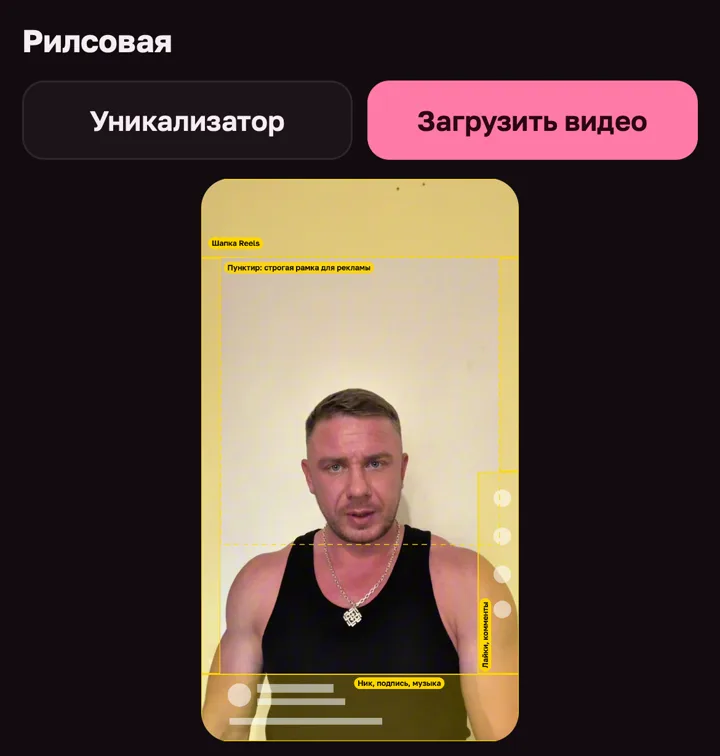
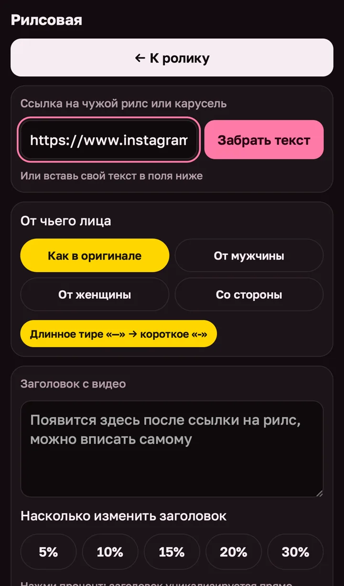
Примерно через полминуты в окошках появятся заголовок с обложки и текст под рилсом. У карусели программа забирает текст со всех слайдов
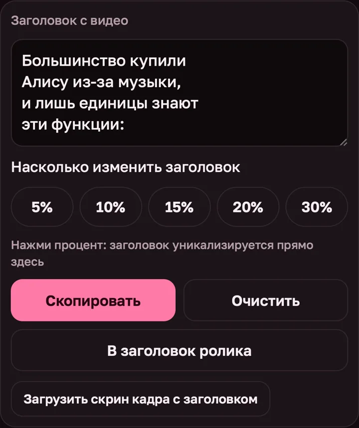
Сначала выберите, от чьего лица писать: Как в оригинале, От мужчины, От женщины или Со стороны. Взяли рилс у девушки, а вы мужчина - нажмите «От мужчины», и текст перепишется под вас
Потом нажмите процент под окошком: 5, 10, 15, 20 или 30. Текст переделается прямо на месте
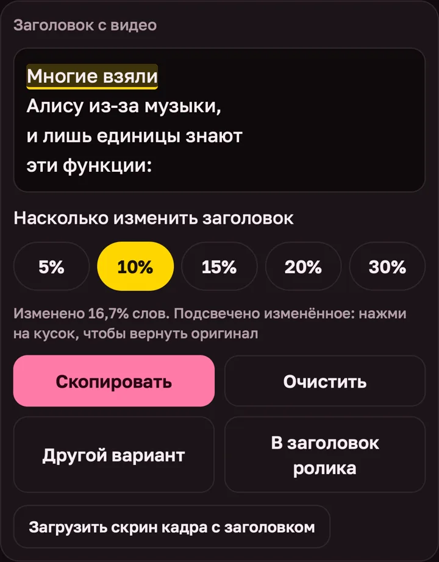
Текст под рилсом уникализируется так же, в своём окошке
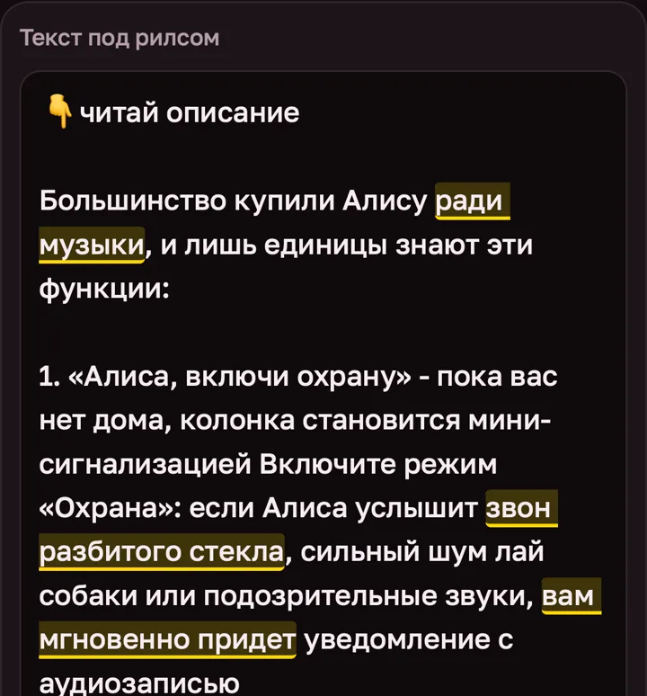
Вернуться к видео без переноса заголовка: кнопка ← К ролику сверху
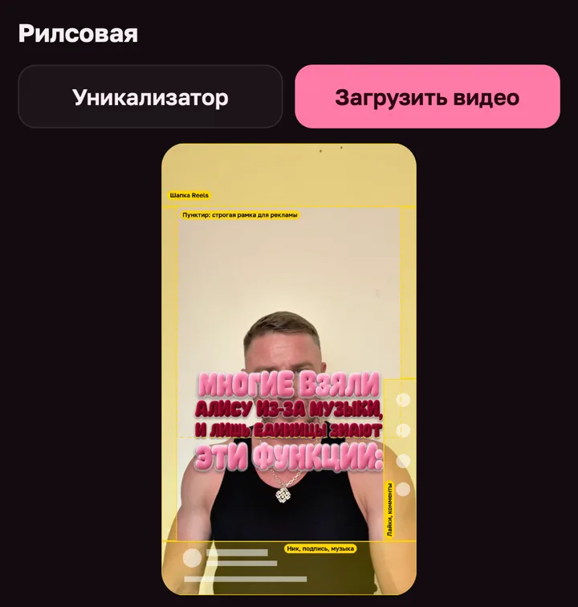
Под видео два ползунка: Размер заголовка и Тень вокруг букв. Тень: 0 - без тени, 50 - родная у оформления, 100 - плотная тёмная кайма, если заголовок теряется на светлом фоне
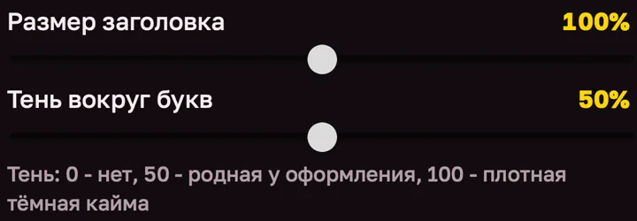
Жёлтые рамки показывают, что в Instagram закроет интерфейс: шапка Reels сверху, ник, подпись и музыка снизу, лайки и комментарии справа
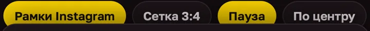
Ниже видео шесть вкладок
11 готовых стилей. «Бархат» - объёмные плюшевые буквы, «Оригинал» - белый текст с тенью
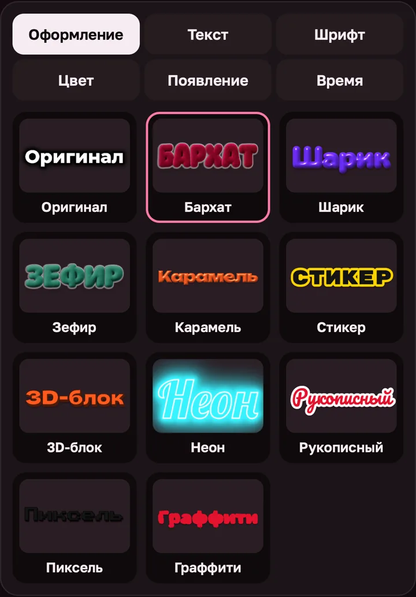
Поправить заголовок руками. Каждая строка поля - строка заголовка на видео. В оформлении «Оригинал» слово в *звёздочках* выделится вторым цветом
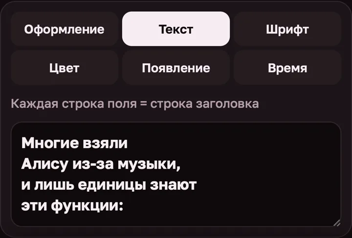
48 шрифтов с русскими буквами. Шрифт меняется у текущего оформления. Вернуть родной: нажмите оформление ещё раз
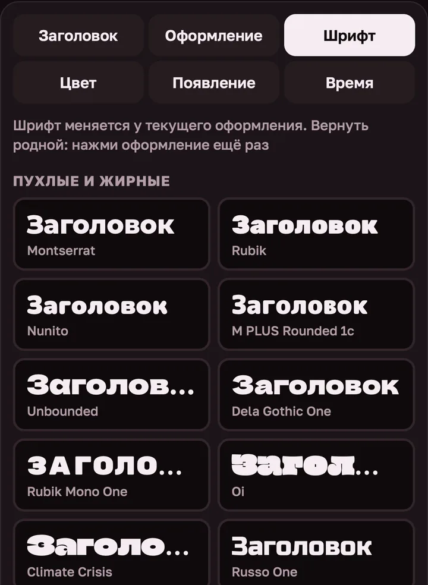
Готовые палитры или свои цвета для светлых и тёмных строк
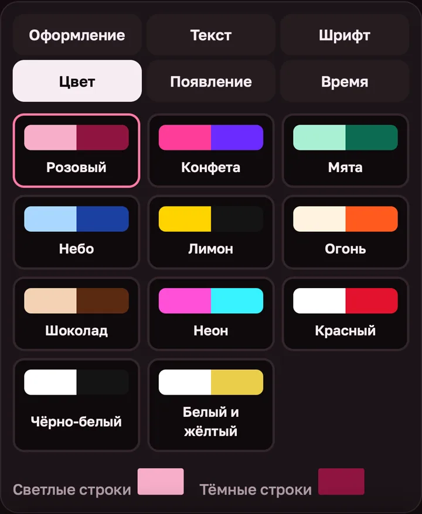
Как заголовок появится в ролике: без анимации, выпрыгивает, падает сверху, по строкам или пульсирует
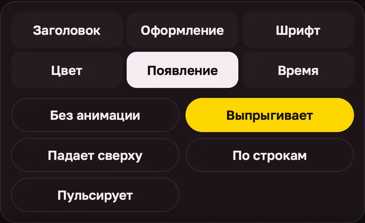
На какой секунде заголовок появляется и когда исчезает
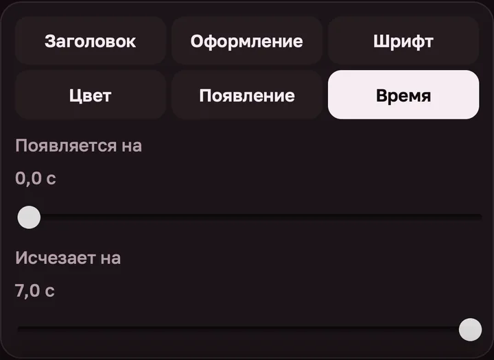
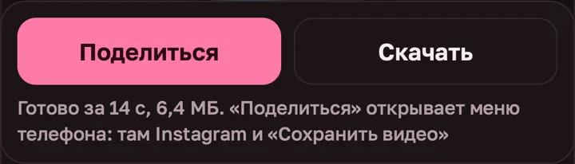
Рилсовая в тесте, я её дорабатываю. Чего не хватает, что мешает, какие шрифты и оформления добавить - напишите мне. В самом низу программы есть кнопка Поддержка и предложения, она ведёт ко мне в Telegram
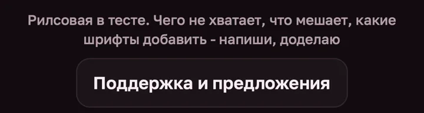
Иван Логинов · ivan-loginov.ru